%cd ./00_previous_exams/Midterm2024/wd/00_previous_exams/Midterm2024Use this Jupyter notebook to complete the required tasks and submit it to Moodle.
The notebook should contain the code with your analysis and it must be reproducible.
The most important part of your work is the comments and interpretation of the analysis results obtained. Do not include uncommented figures. Remember to include a conclusion section at the end.
Use OBS to record your screen and webcam. Upload the video file (max. 500Mb) to Moodle. Alternatively, make sure to copy it to one of the pendrives that will be provided.
Look for your student code in the student_codes.txt file. Use the corresponding zip file cpntaining the data files for your analysis. IMPORTANT: An exam done with a wrong dataset implies a failed exam.
Load the training set ML_midterm_tr_XX.csv and the test set ML_midterm_ts_XX.csv corresponding to your student code.
The dataset contains 7 input variables: six numerical and one categorical. The output numeric variable is called Y.
The first code cell below contains standard imports that we have used in the sessions. With these imports you should be able to do all the tasks in the exam; that is not to say that you need to use all of them, and you are invited to use extra imports if you feel the need.
We have also included a Python script auxiliary_code.py with two functions called ResidualPlots and explore_outliers that will be available when you run the second cell in this notebook.
Perform an explanatory analysis of the training data.
IMPORTANT: we have provided you with separate training and test sets for reproducibility. But the training set may still need basic preprocessing! Do not assume that the training data has been thoroughly cleaned. The test set, on the other hand, can be used as it is.
Fit a linear regression model to the training set to predict the output variable Y using X1, …, X7 as input variables.
Analyze the significance of the model coefficients and the residuals plots.
Obtain the training, test and validation scores for this model. Store them in a model dictionary like we have done in the course sessions.
Using the previous results fit a second linear model using the categorical input but keeping only the significant numerical inputs from the first model. In this second model include quadratic and interaction terms for its input variables. Train the model and make sure that you keep only significant terms in your final model. Repeat the residual analysis, and performance measures for this model,
Fit a regression tree model for the training dataset. Use max_depth as a hyperparameter (ranging from 1 to 10) and perform a grid search to find its optimal value. What is the selected tree depth?
Obtain the training, test and validation scores for the tree model and add them to the dictionary.
Analyze the residuals plots for this model.
What are the most important input variables for this model?
Compare the performance of the different regression models using the validation and test metrics and also the residualplots. Draw conclusions from this comparison.
%cd ./00_previous_exams/Midterm2024/wd/00_previous_exams/Midterm2024### Load necessary modules -------------------------------
# interactive plotting
%config InlineBackend.figure_format = 'png' # ‘png’, ‘retina’, ‘jpeg’, ‘svg’, ‘pdf’
# plotting libraries
import seaborn as sns
import matplotlib.pyplot as plt
# sns.set()
import statsmodels.api as sm
# Data management libraries
import numpy as np
import pandas as pd
import scipy.stats as stats
# Machine learning libraries
from sklearn.model_selection import train_test_split, GridSearchCV, cross_val_score
from sklearn.preprocessing import StandardScaler, OneHotEncoder
from sklearn.compose import ColumnTransformer
from sklearn.pipeline import Pipeline
from sklearn.metrics import mean_squared_error
from sklearn.linear_model import LinearRegression
# Feature selection libraries
from sklearn.feature_selection import SequentialFeatureSelector
from sklearn.linear_model import Ridge, Lasso, ElasticNet
from sklearn.feature_selection import RFECV
# Machine learning libraries
from sklearn.decomposition import PCA
from sklearn.cross_decomposition import PLSRegression
from sklearn.pipeline import Pipeline
from sklearn.preprocessing import StandardScaler, OneHotEncoder
from statsmodels.stats.outliers_influence import variance_inflation_factor
from sklearn.compose import ColumnTransformer
from sklearn.metrics import mean_squared_error, r2_score, mean_absolute_error
# Connecting statsmodels with sklearn via sklearn2pmml and patsy
import statsmodels.api as sm
from statsmodels.api import OLS
from statsmodels.stats.outliers_influence import variance_inflation_factor
from sklearn2pmml.statsmodels import StatsModelsRegressor
# Others
import warnings
# patsy for lineal model formula language
import patsy as ps
from patsy_utils.patsy_formulaic_transformer import FormulaTransformer
from sklearn.tree import DecisionTreeRegressor, plot_tree%run -i "auxiliary_code.py"We begin by loading the data sets for training and test and looking at their first rows.
dfTR = pd.read_csv("./data/ML_midterm_tr_1.csv")
print(dfTR.head(3)) X1 X2 X3 X4 X5 X6 X7 Y
0 -1.416924 0.022170 0.076047 -6.105536 0.099986 -0.058571 B -1.217963
1 -2.626367 -0.083067 -0.410911 -11.373946 0.036854 -0.104747 B 0.936219
2 7.443831 -0.019498 0.177184 28.179435 -0.048178 -0.195903 B 1.352122dfTS = pd.read_csv("./data/ML_midterm_ts_1.csv")
print(dfTS.head(3)) X1 X2 X3 X4 X5 X6 X7 Y
0 -8.104545 -0.014192 0.116363 -27.220679 0.035153 0.646177 B -0.761636
1 3.920557 0.001465 -0.411669 17.841217 0.060565 0.267324 B 0.017037
2 -2.778927 0.036699 0.674120 -9.289416 -0.036311 0.234459 B -0.457599We identify the numerical, categorical inputs and the output.
output = "Y"
num_inputs = ["X1", "X2", "X3", "X4", "X5", "X6"]
cat_inputs = ["X7"]
inputs = num_inputs + cat_inputsA first numerical EDA of the training data:
dfTR.describe()| X1 | X2 | X3 | X4 | X5 | X6 | Y | |
|---|---|---|---|---|---|---|---|
| count | 1610.000000 | 1611.000000 | 1611.000000 | 1612.000000 | 1608.000000 | 1610.000000 | 1612.000000 |
| mean | 0.003771 | -0.000440 | 0.000751 | 0.020380 | 0.000206 | 0.007179 | 0.953785 |
| std | 4.059791 | 0.040936 | 0.533618 | 16.667614 | 0.054255 | 0.508336 | 1.826855 |
| min | -13.473841 | -0.126164 | -4.767451 | -51.581439 | -0.566700 | -1.637143 | -4.634302 |
| 25% | -2.687244 | -0.028962 | -0.326466 | -11.368059 | -0.034982 | -0.321509 | -0.300303 |
| 50% | 0.047534 | 0.000061 | -0.000158 | 0.440730 | -0.000038 | -0.014175 | 0.827049 |
| 75% | 2.801219 | 0.027931 | 0.334949 | 11.448714 | 0.032337 | 0.340893 | 1.985087 |
| max | 12.002434 | 0.124392 | 2.999517 | 51.071758 | 0.533244 | 3.312419 | 9.919518 |
dfTR.info()<class 'pandas.core.frame.DataFrame'>
RangeIndex: 1612 entries, 0 to 1611
Data columns (total 8 columns):
# Column Non-Null Count Dtype
--- ------ -------------- -----
0 X1 1610 non-null float64
1 X2 1611 non-null float64
2 X3 1611 non-null float64
3 X4 1612 non-null float64
4 X5 1608 non-null float64
5 X6 1610 non-null float64
6 X7 1612 non-null object
7 Y 1612 non-null float64
dtypes: float64(7), object(1)
memory usage: 100.9+ KBWe check for missing values. There are very few, som we remove them.
dfTR.isna().sum(axis=0)
# df.dropna(inplace=True)
# df.isna().sum(axis=0)X1 2
X2 1
X3 1
X4 0
X5 4
X6 2
X7 0
Y 0
dtype: int64dfTR.dropna(inplace=True)
# dfTR.isna().sum(axis=0)The categorical input is binary. We will convert it to category type:
dfTR[cat_inputs].value_counts()X7
B 809
A 798
Name: count, dtype: int64object_cols = dfTR.select_dtypes("object").columns
dfTR[object_cols] = dfTR[object_cols].astype("category")
dfTR.info()<class 'pandas.core.frame.DataFrame'>
Index: 1607 entries, 0 to 1611
Data columns (total 8 columns):
# Column Non-Null Count Dtype
--- ------ -------------- -----
0 X1 1607 non-null float64
1 X2 1607 non-null float64
2 X3 1607 non-null float64
3 X4 1607 non-null float64
4 X5 1607 non-null float64
5 X6 1607 non-null float64
6 X7 1607 non-null category
7 Y 1607 non-null float64
dtypes: category(1), float64(7)
memory usage: 102.1 KBNow we define the XTR and YTR` datasets for the code below:
XTR = dfTR[inputs]
YTR = dfTR[output]and we make an initial pairplot that reveals the existence of outliers in several inputs:
sns.set_style("dark")
sns.pairplot(dfTR, corner=True, height=1.5, aspect=1, hue=cat_inputs[0]);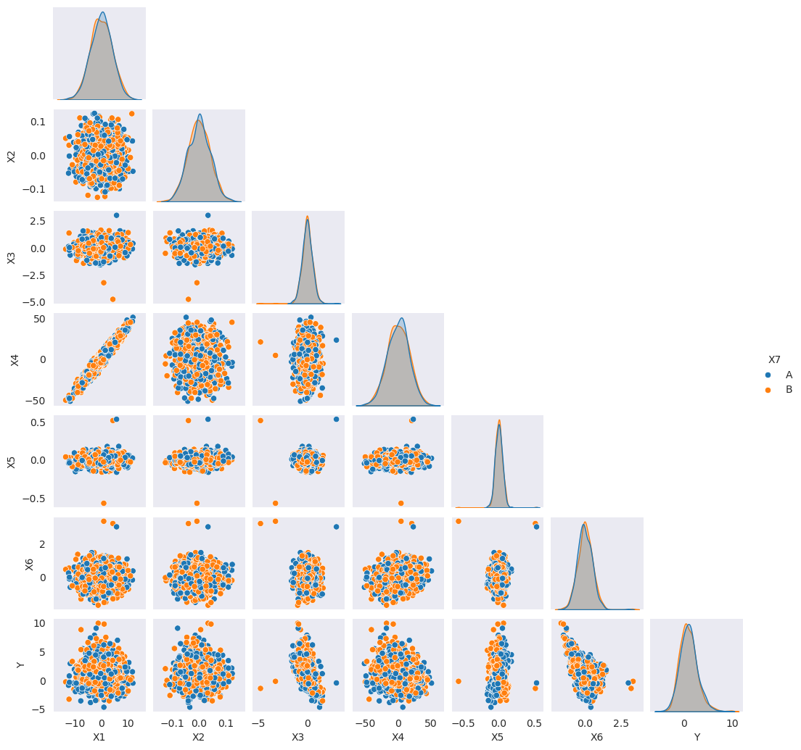
We use the explore_outliers function with the numeric inputs in XTR.
from matplotlib.cbook import boxplot_stats
out_XTR = explore_outliers(XTR, num_inputs)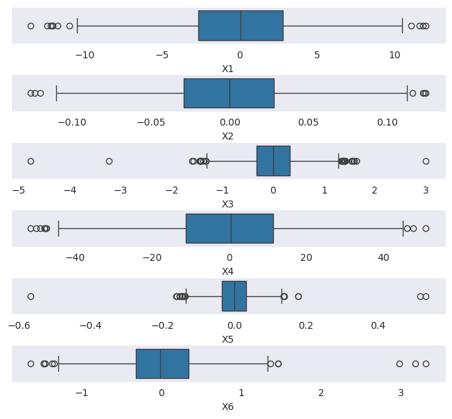
Then we use the result to drop all the outliers, removing them from XTR and also the corresponding output values in YTR.
out_XTR_indices = set([k for var in num_inputs for k in out_XTR[var]["indices"] ])
XTR.drop(out_XTR_indices, axis=0, inplace=True)
# Also make sure to remove the corresponding output values in `YTR`.
YTR.drop(out_XTR_indices, axis=0, inplace=True) # Always keep in mind that you need to keep `YTR` updated.
explore_outliers(XTR, num_inputs)/tmp/ipykernel_43/2240691641.py:3: SettingWithCopyWarning:
A value is trying to be set on a copy of a slice from a DataFrame
See the caveats in the documentation: https://pandas.pydata.org/pandas-docs/stable/user_guide/indexing.html#returning-a-view-versus-a-copy
XTR.drop(out_XTR_indices, axis=0, inplace=True){'X1': {'values': array([], dtype=float64), 'positions': [], 'indices': []},
'X2': {'values': array([0.11261046]), 'positions': [483], 'indices': [507]},
'X3': {'values': array([-1.30702134, -1.30936033]),
'positions': [49, 1515],
'indices': [52, 1583]},
'X4': {'values': array([], dtype=float64), 'positions': [], 'indices': []},
'X5': {'values': array([-0.13527844]), 'positions': [474], 'indices': [497]},
'X6': {'values': array([], dtype=float64), 'positions': [], 'indices': []}}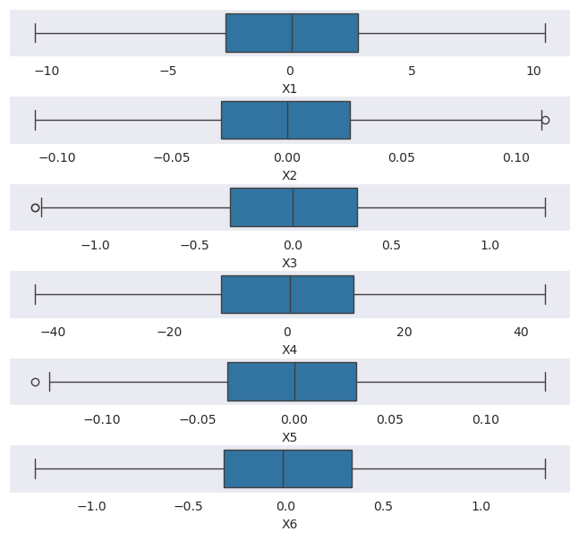
We update the dfTR set after these changes:
dfTR = XTR
dfTR[output] = YTRAnd we repeat the pairplot to check the result and to look for relations between inputs. The very high correlation between two of the inputs is remarkable.
sns.pairplot(dfTR, corner=True, height=1.5, aspect=1, hue=cat_inputs[0]);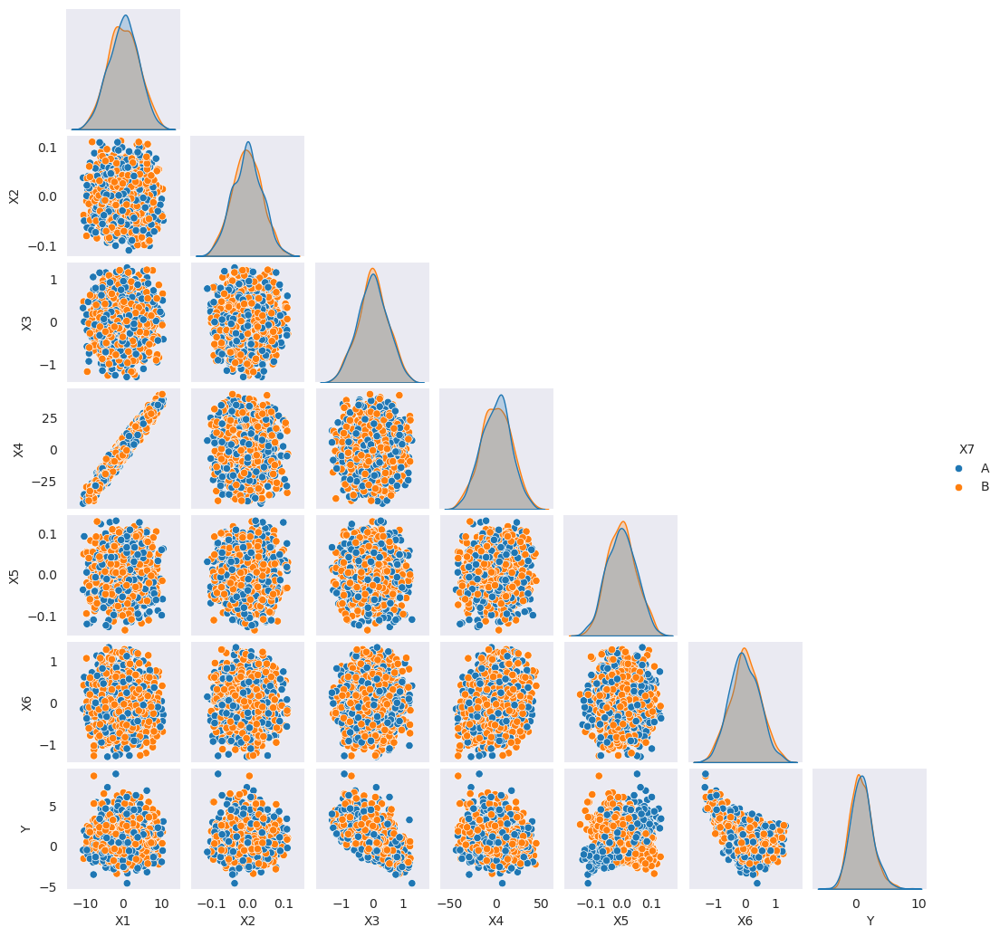
Let us find the correlated pair to remove one of those variables, and check the rest of correlations:
XTR[num_inputs].corr()| X1 | X2 | X3 | X4 | X5 | X6 | |
|---|---|---|---|---|---|---|
| X1 | 1.000000 | -0.003189 | -0.006372 | 0.971203 | 0.008750 | -0.011738 |
| X2 | -0.003189 | 1.000000 | 0.015327 | -0.011631 | 0.005010 | -0.035634 |
| X3 | -0.006372 | 0.015327 | 1.000000 | -0.005882 | -0.005518 | 0.001660 |
| X4 | 0.971203 | -0.011631 | -0.005882 | 1.000000 | 0.021813 | 0.226831 |
| X5 | 0.008750 | 0.005010 | -0.005518 | 0.021813 | 1.000000 | 0.055838 |
| X6 | -0.011738 | -0.035634 | 0.001660 | 0.226831 | 0.055838 | 1.000000 |
dfTR.drop(columns="X4", inplace=True)
dfTS.drop(columns="X4", inplace=True)
num_inputs.remove("X4")
inputs = num_inputs + cat_inputs
inputs['X1', 'X2', 'X3', 'X5', 'X6', 'X7']Again be careful to keep the datasets updated after these operations.
XTR = dfTR[inputs]
YTR = dfTR[output]
XTS = dfTS[inputs]
YTS = dfTS[output]We begin by defining the formula of the model using all the inputs:
model_Formula = " + ".join(inputs)
model_Formula'X1 + X2 + X3 + X5 + X6 + X7'Next we define the model pipeline
with warnings.catch_warnings():
warnings.simplefilter("ignore")
lm_pipeline = Pipeline([
("formula", FormulaTransformer(model_Formula)),
("regressor", StatsModelsRegressor(OLS, fit_intercept = False))])and we fit it:
lm_pipeline.fit(dfTR[inputs], dfTR[output])Pipeline(steps=[('formula',
FormulaTransformer(formula='X1 + X2 + X3 + X5 + X6 + X7')),
('regressor',
StatsModelsRegressor(fit_intercept=False,
model_class=<class 'statsmodels.regression.linear_model.OLS'>))])In a Jupyter environment, please rerun this cell to show the HTML representation or trust the notebook. | steps | [('formula', ...), ('regressor', ...)] | |
| transform_input | None | |
| memory | None | |
| verbose | False |
| formula | 'X1 + X2 + X3 + X5 + X6 + X7' |
| model_class | <class 'stats...ar_model.OLS'> | |
| fit_intercept | False |
We store the model for the model dictionary and the performance code below.
model = lm_pipeline._final_estimator
modelStatsModelsRegressor(fit_intercept=False,
model_class=<class 'statsmodels.regression.linear_model.OLS'>)In a Jupyter environment, please rerun this cell to show the HTML representation or trust the notebook. | model_class | <class 'stats...ar_model.OLS'> | |
| fit_intercept | False |
The table of coefficients of the model appears below. Two of the numeric inputs and the categorical one have coefficients non significantly different from zero. The \(R^2\) coefficient is approximately 0.6.
print(model.results_.summary()) OLS Regression Results
==============================================================================
Dep. Variable: Y R-squared: 0.620
Model: OLS Adj. R-squared: 0.619
Method: Least Squares F-statistic: 417.7
Date: Wed, 25 Feb 2026 Prob (F-statistic): 2.96e-318
Time: 10:27:25 Log-Likelihood: -2295.3
No. Observations: 1541 AIC: 4605.
Df Residuals: 1534 BIC: 4642.
Df Model: 6
Covariance Type: nonrobust
==============================================================================
coef std err t P>|t| [0.025 0.975]
------------------------------------------------------------------------------
Intercept 0.9393 0.039 24.132 0.000 0.863 1.016
X7[T.B] 0.0297 0.055 0.541 0.589 -0.078 0.137
X1 -0.0085 0.007 -1.217 0.224 -0.022 0.005
X2 0.1292 0.682 0.190 0.850 -1.208 1.466
X3 -2.0823 0.057 -36.596 0.000 -2.194 -1.971
X5 2.2952 0.580 3.959 0.000 1.158 3.432
X6 -1.9438 0.057 -33.977 0.000 -2.056 -1.832
==============================================================================
Omnibus: 45.173 Durbin-Watson: 1.964
Prob(Omnibus): 0.000 Jarque-Bera (JB): 51.600
Skew: 0.376 Prob(JB): 6.24e-12
Kurtosis: 3.488 Cond. No. 97.7
==============================================================================
Notes:
[1] Standard Errors assume that the covariance matrix of the errors is correctly specified.Let us look at the residual plots. You can see that:
ResidualPlots(model=model, data=dfTR, num_inputs=num_inputs, cat_inputs=cat_inputs, output=output)--------------------------------------------------
Density Curve and QQ-plot of Residuals: ['X1', 'X2', 'X3', 'X5', 'X6']
--------------------------------------------------
[<Axes: > <Axes: >]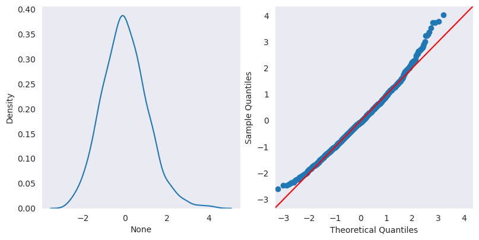
--------------------------------------------------
Fitted Values vs Residuals:
--------------------------------------------------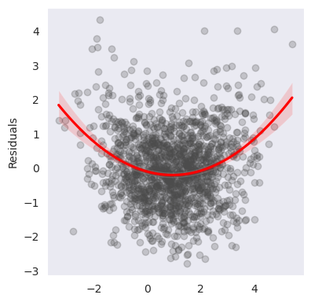
--------------------------------------------------
Numerical inputs: ['X1', 'X2', 'X3', 'X5', 'X6']
--------------------------------------------------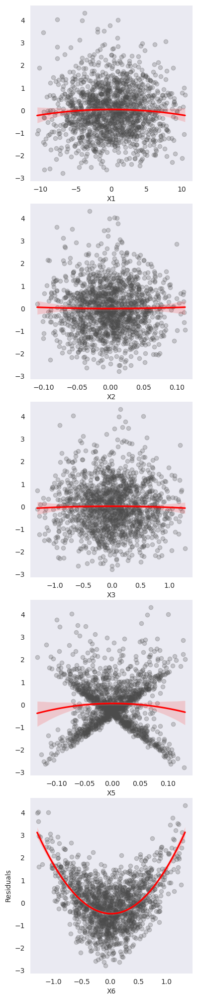
--------------------------------------------------
Categorical inputs: ['X7']
--------------------------------------------------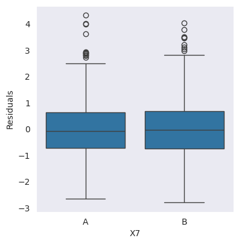
We create dataset to store the predictions of these and the other models.
dfTR_eval = XTR.copy()
dfTR_eval[output] = YTR
dfTS_eval = XTS.copy()
dfTS_eval[output] = YTSAnd these are the actual predictions. Be careful to give them a name that distinguishes them from other models.
dfTR_eval['lm1_pred'] = lm_pipeline.predict(XTR)
dfTS_eval['lm1_pred'] = lm_pipeline.predict(XTS)Now we create the model dictionary.
modelDict={}Compute the training score:
lm_train_score = -np.sqrt(mean_squared_error(YTR, dfTR_eval["lm1_pred"]))
lm_train_scorenp.float64(-1.0730627966311066)The validation scores (note the metric):
lm_val_scores = cross_val_score(lm_pipeline, XTR, YTR, cv=10, scoring="neg_root_mean_squared_error")
lm_val_scoresarray([-1.0356904 , -1.0669309 , -1.07829477, -1.0592183 , -1.07535191,
-1.05864762, -1.17463099, -0.99356472, -1.14229134, -1.08472539])And finally the test score:
lm_test_score = -np.sqrt(mean_squared_error(YTS, dfTS_eval["lm1_pred"]))
lm_test_scorenp.float64(-1.1337972762713564)With this we can enter the model in the dictionary:
modelDict['lm1'] = {'val_scores':lm_val_scores, 'test_score':lm_test_score}Using the previous results fit a second linear model using the categorical input but keeping only the significant numerical inputs from the first model. In this second model include interaction terms for all its input variables and quadratic terms for the numeric inputs. Train the model and update the formula to make sure that you keep only significant terms in your final model. Repeat the residual analysis, and performance measures for this model.
We update the model formula as instructed in the statement. Note that we have dropped the numeric variables that were non significant, but we keep the categorical input to explore posible interactions:
model_Formula = "(X3 + X5 + X6 + X7) * (X3 + X5 + X6 + X7) + I(X3**2)+ I(X5**2) + I(X6**2)"
model_Formula'(X3 + X5 + X6 + X7) * (X3 + X5 + X6 + X7) + I(X3**2)+ I(X5**2) + I(X6**2)'And we train a model with this formula:
with warnings.catch_warnings():
warnings.simplefilter("ignore")
lm_pipeline = Pipeline([
("formula", FormulaTransformer(model_Formula)),
("regressor", StatsModelsRegressor(OLS, fit_intercept = False))])lm_pipeline.fit(dfTR[inputs], dfTR[output])
model = lm_pipeline._final_estimator
modelStatsModelsRegressor(fit_intercept=False,
model_class=<class 'statsmodels.regression.linear_model.OLS'>)In a Jupyter environment, please rerun this cell to show the HTML representation or trust the notebook. | model_class | <class 'stats...ar_model.OLS'> | |
| fit_intercept | False |
Now the table of coefficients shows many non significant coefficients. But there is a quadratic term and an interaction with the factor that are significant. Note also the jump in the value of \(R^2\).
print(model.results_.summary()) OLS Regression Results
==============================================================================
Dep. Variable: Y R-squared: 0.997
Model: OLS Adj. R-squared: 0.997
Method: Least Squares F-statistic: 3.669e+04
Date: Wed, 25 Feb 2026 Prob (F-statistic): 0.00
Time: 10:27:58 Log-Likelihood: 1386.8
No. Observations: 1541 AIC: -2746.
Df Residuals: 1527 BIC: -2671.
Df Model: 13
Covariance Type: nonrobust
==============================================================================
coef std err t P>|t| [0.025 0.975]
------------------------------------------------------------------------------
Intercept 0.4994 0.005 101.006 0.000 0.490 0.509
X7[T.B] 0.0113 0.005 2.242 0.025 0.001 0.021
X3 -1.9984 0.007 -268.274 0.000 -2.013 -1.984
X3:X7[T.B] -0.0093 0.010 -0.885 0.376 -0.030 0.011
X5 20.0545 0.075 268.545 0.000 19.908 20.201
X5:X7[T.B] -36.1510 0.107 -337.825 0.000 -36.361 -35.941
X6 -2.0066 0.008 -262.575 0.000 -2.022 -1.992
X6:X7[T.B] 0.0134 0.011 1.267 0.205 -0.007 0.034
X3:X5 -0.1845 0.112 -1.653 0.098 -0.403 0.034
X3:X6 0.0135 0.011 1.199 0.231 -0.009 0.036
X5:X6 0.1848 0.114 1.623 0.105 -0.039 0.408
I(X3 ** 2) 0.0048 0.008 0.579 0.563 -0.011 0.021
I(X5 ** 2) 0.0952 0.880 0.108 0.914 -1.631 1.822
I(X6 ** 2) 1.9805 0.008 238.503 0.000 1.964 1.997
==============================================================================
Omnibus: 2.538 Durbin-Watson: 2.040
Prob(Omnibus): 0.281 Jarque-Bera (JB): 2.676
Skew: 0.012 Prob(JB): 0.262
Kurtosis: 3.203 Cond. No. 417.
==============================================================================
Notes:
[1] Standard Errors assume that the covariance matrix of the errors is correctly specified.Therefore for the final model we keep only the significant terms from this one:
model_Formula = "X3 + X5 + X6 + X7 + X5:X7 + I(X6**2)"
model_Formula'X3 + X5 + X6 + X7 + X5:X7 + I(X6**2)'with warnings.catch_warnings():
warnings.simplefilter("ignore")
lm_pipeline = Pipeline([
("formula", FormulaTransformer(model_Formula)),
("regressor", StatsModelsRegressor(OLS, fit_intercept = False))])
lm_pipeline.fit(dfTR[inputs], dfTR[output])
model = lm_pipeline._final_estimator
model
StatsModelsRegressor(fit_intercept=False,
model_class=<class 'statsmodels.regression.linear_model.OLS'>)In a Jupyter environment, please rerun this cell to show the HTML representation or trust the notebook. | model_class | <class 'stats...ar_model.OLS'> | |
| fit_intercept | False |
Now the table of coefficients shows that all the included terms are significant and the \(R^2\) value is really high:
print(model.results_.summary()) OLS Regression Results
==============================================================================
Dep. Variable: Y R-squared: 0.997
Model: OLS Adj. R-squared: 0.997
Method: Least Squares F-statistic: 7.936e+04
Date: Wed, 25 Feb 2026 Prob (F-statistic): 0.00
Time: 10:28:18 Log-Likelihood: 1382.1
No. Observations: 1541 AIC: -2750.
Df Residuals: 1534 BIC: -2713.
Df Model: 6
Covariance Type: nonrobust
==============================================================================
coef std err t P>|t| [0.025 0.975]
------------------------------------------------------------------------------
Intercept 0.5011 0.004 124.440 0.000 0.493 0.509
X7[T.B] 0.0113 0.005 2.244 0.025 0.001 0.021
X3 -2.0024 0.005 -382.476 0.000 -2.013 -1.992
X5 20.0464 0.075 268.564 0.000 19.900 20.193
X5:X7[T.B] -36.1324 0.107 -338.827 0.000 -36.342 -35.923
X6 -1.9999 0.005 -379.756 0.000 -2.010 -1.990
I(X6 ** 2) 1.9807 0.008 239.003 0.000 1.964 1.997
==============================================================================
Omnibus: 2.415 Durbin-Watson: 2.024
Prob(Omnibus): 0.299 Jarque-Bera (JB): 2.532
Skew: 0.003 Prob(JB): 0.282
Kurtosis: 3.199 Cond. No. 56.4
==============================================================================
Notes:
[1] Standard Errors assume that the covariance matrix of the errors is correctly specified.The residual plots for this model are also telling of a very good fit: normal residuals and no remarkable patterns in the residuals.
ResidualPlots(model=model, data=dfTR, num_inputs=["X3", "X5", "X6"], cat_inputs=cat_inputs, output=output)--------------------------------------------------
Density Curve and QQ-plot of Residuals: ['X3', 'X5', 'X6']
--------------------------------------------------
[<Axes: > <Axes: >]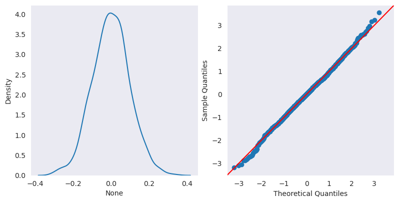
--------------------------------------------------
Fitted Values vs Residuals:
--------------------------------------------------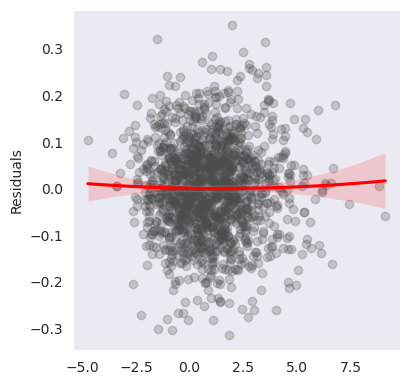
--------------------------------------------------
Numerical inputs: ['X3', 'X5', 'X6']
--------------------------------------------------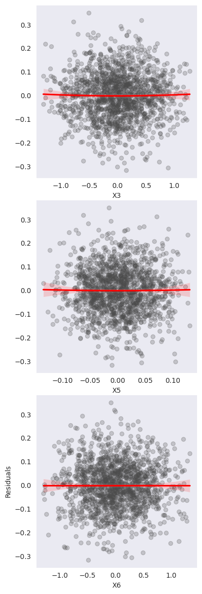
--------------------------------------------------
Categorical inputs: ['X7']
--------------------------------------------------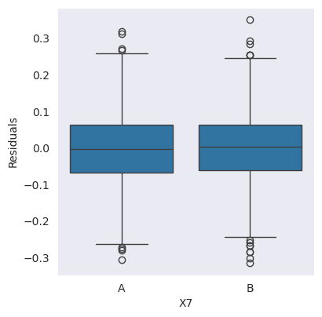
We compute and store the predicitions of this model:
dfTR_eval['lm2_pred'] = lm_pipeline.predict(XTR)
dfTS_eval['lm2_pred'] = lm_pipeline.predict(XTS)We use them to obtain the training, test and validation scores in the next cells:
lm_train_score = -np.sqrt(mean_squared_error(YTR, dfTR_eval["lm2_pred"]))
lm_train_scorenp.float64(-0.0986852011412062)lm_val_scores = cross_val_score(lm_pipeline, XTR, YTR, cv=10, scoring="neg_root_mean_squared_error")
lm_val_scoresarray([-0.10302976, -0.1003026 , -0.1032809 , -0.10160784, -0.09599759,
-0.09908814, -0.0919676 , -0.10432333, -0.0939619 , -0.09749362])lm_test_score = -np.sqrt(mean_squared_error(YTS, dfTS_eval["lm2_pred"]))
lm_test_scorenp.float64(-0.09766049353178927)And add them to the model dictionary:
modelDict['lm2'] = {'val_scores':lm_val_scores, 'test_score':lm_test_score}Fit a regression tree model for the training dataset. Use max_depth as a hyperparameter (ranging from 1 to 10) and perform a grid search to find its optimal value. What is the selected tree depth?
We begin by defining a grid for the hyperparameter:
DT_hyp_grid = {'DT__max_depth': np.arange(1, 10)}And we create the model’s pipeline and grid search framework:
numeric_transformer = Pipeline(steps=[('scaler',StandardScaler())]) # Preprocess the variables when training the model
categorical_transformer = Pipeline(steps=[('onehot', OneHotEncoder(handle_unknown='ignore'))])
preprocessor = ColumnTransformer(transformers=[
('num', numeric_transformer, num_inputs),
('cat', categorical_transformer, cat_inputs)
])
DT_pipe = Pipeline(steps=[('preprocessor',preprocessor),
('DT', DecisionTreeRegressor(
min_samples_split=5,
min_samples_leaf=5,
random_state=1))])
nFolds = 10
DT_grid = GridSearchCV(estimator= DT_pipe,
param_grid=DT_hyp_grid,
n_jobs=-1,
scoring='neg_root_mean_squared_error',
cv=nFolds) Now fitting the model is straightforward:
DT_grid.fit(XTR, YTR)
model = DT_grid
modelGridSearchCV(cv=10,
estimator=Pipeline(steps=[('preprocessor',
ColumnTransformer(transformers=[('num',
Pipeline(steps=[('scaler',
StandardScaler())]),
['X1',
'X2',
'X3',
'X5',
'X6']),
('cat',
Pipeline(steps=[('onehot',
OneHotEncoder(handle_unknown='ignore'))]),
['X7'])])),
('DT',
DecisionTreeRegressor(min_samples_leaf=5,
min_samples_split=5,
random_state=1))]),
n_jobs=-1,
param_grid={'DT__max_depth': array([1, 2, 3, 4, 5, 6, 7, 8, 9])},
scoring='neg_root_mean_squared_error')In a Jupyter environment, please rerun this cell to show the HTML representation or trust the notebook. | estimator | Pipeline(step...om_state=1))]) | |
| param_grid | {'DT__max_depth': array([1, 2, ..., 6, 7, 8, 9])} | |
| scoring | 'neg_root_mean_squared_error' | |
| n_jobs | -1 | |
| refit | True | |
| cv | 10 | |
| verbose | 0 | |
| pre_dispatch | '2*n_jobs' | |
| error_score | nan | |
| return_train_score | False |
| transformers | [('num', ...), ('cat', ...)] | |
| remainder | 'drop' | |
| sparse_threshold | 0.3 | |
| n_jobs | None | |
| transformer_weights | None | |
| verbose | False | |
| verbose_feature_names_out | True | |
| force_int_remainder_cols | 'deprecated' |
['X1', 'X2', 'X3', 'X5', 'X6']
| copy | True | |
| with_mean | True | |
| with_std | True |
['X7']
| categories | 'auto' | |
| drop | None | |
| sparse_output | True | |
| dtype | <class 'numpy.float64'> | |
| handle_unknown | 'ignore' | |
| min_frequency | None | |
| max_categories | None | |
| feature_name_combiner | 'concat' |
| criterion | 'squared_error' | |
| splitter | 'best' | |
| max_depth | np.int64(6) | |
| min_samples_split | 5 | |
| min_samples_leaf | 5 | |
| min_weight_fraction_leaf | 0.0 | |
| max_features | None | |
| random_state | 1 | |
| max_leaf_nodes | None | |
| min_impurity_decrease | 0.0 | |
| ccp_alpha | 0.0 | |
| monotonic_cst | None |
The selected max depth for the model is:
model.best_params_{'DT__max_depth': np.int64(6)}And now we compute the training, validation and test scores for the model:
dfTR_eval['DT_pred'] = model.predict(XTR)
dfTS_eval['DT_pred'] = model.predict(XTS)
Y_DT_TR_pred = dfTR_eval['DT_pred']DT_train_score = -np.sqrt(mean_squared_error(YTR, dfTR_eval["DT_pred"]))
DT_train_scorenp.float64(-0.7869684432972662)DT_val_scores = cross_val_score(model, XTR, YTR, scoring="neg_root_mean_squared_error", cv=10)
DT_val_scoresarray([-0.92011729, -1.02937799, -1.005983 , -1.01964001, -0.91110937,
-0.95967844, -0.97418247, -0.91130824, -0.90557769, -1.02361876])DT_test_score = -np.sqrt(mean_squared_error(YTS, dfTS_eval['DT_pred']))
DT_test_scorenp.float64(-0.9884304074639139)Note the difference between training and validation or test errors, that are a symptom of overfitting for this model. We add the model information to the dictionary:
modelDict['DT'] = {'val_scores':DT_val_scores, 'test_score':DT_test_score}And then the residuals diagnostic plots. They are all indicators of a quite good fit, except for one plot that clearly shows that the model has missed the interaction between inputs.
DT_fitted = Y_DT_TR_pred
DT_resid = YTR - DT_fitted
ResidualPlots(resid=DT_resid, fitted=DT_fitted, data=XTR, num_inputs=num_inputs, cat_inputs=cat_inputs)--------------------------------------------------
Density Curve and QQ-plot of Residuals: ['X1', 'X2', 'X3', 'X5', 'X6']
--------------------------------------------------
[<Axes: > <Axes: >]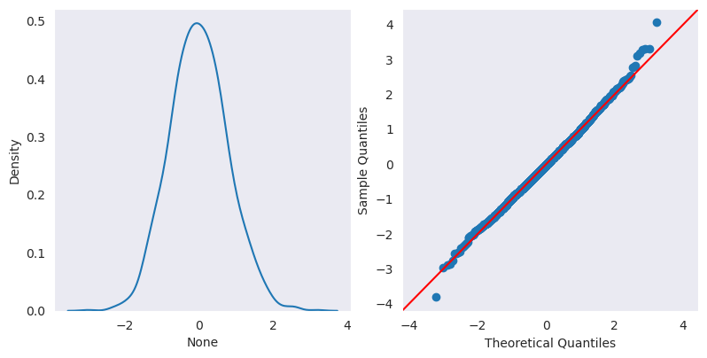
--------------------------------------------------
Fitted Values vs Residuals:
--------------------------------------------------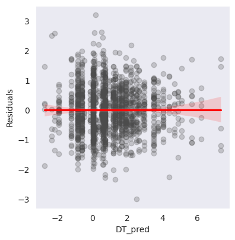
--------------------------------------------------
Numerical inputs: ['X1', 'X2', 'X3', 'X5', 'X6']
--------------------------------------------------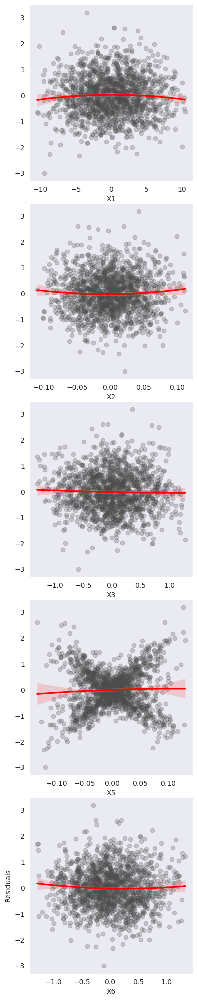
--------------------------------------------------
Categorical inputs: ['X7']
--------------------------------------------------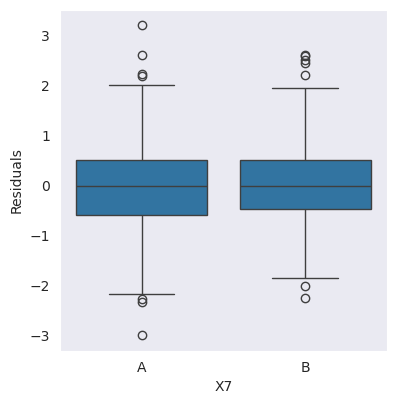
Let us get the feature importances for this tree model:
DT_grid.best_estimator_['DT'].feature_importances_
DT_pipe.named_steps["preprocessor"].fit(XTR)
XTR_preproc_names = DT_pipe.named_steps["preprocessor"].get_feature_names_out().tolist()var_importances = pd.DataFrame({'var':XTR_preproc_names,
'importance': DT_grid.best_estimator_['DT'].feature_importances_}
).sort_values(by="importance", ascending = False)
var_importances| var | importance | |
|---|---|---|
| 4 | num__X6 | 0.540319 |
| 2 | num__X3 | 0.418866 |
| 3 | num__X5 | 0.022688 |
| 5 | cat__X7_A | 0.011362 |
| 1 | num__X2 | 0.006010 |
| 0 | num__X1 | 0.000754 |
| 6 | cat__X7_B | 0.000000 |
As you can see the most important numeric inputs and the position of the input factor agree with the results of linear regression, even though as we have seen the model is not picking up the interaction.
Compare the performance of the different regression models using the validation and test metrics and also the residualplots. Draw conclusions from this comparison.
The validation scores for the model can be compared by drawing parallel boxplots:
val_scores = {ml:(modelDict[ml])['val_scores'] for ml in modelDict.keys()}model_val_scores = pd.DataFrame(val_scores)
model_val_scores| lm1 | lm2 | DT | |
|---|---|---|---|
| 0 | -1.035690 | -0.103030 | -0.920117 |
| 1 | -1.066931 | -0.100303 | -1.029378 |
| 2 | -1.078295 | -0.103281 | -1.005983 |
| 3 | -1.059218 | -0.101608 | -1.019640 |
| 4 | -1.075352 | -0.095998 | -0.911109 |
| 5 | -1.058648 | -0.099088 | -0.959678 |
| 6 | -1.174631 | -0.091968 | -0.974182 |
| 7 | -0.993565 | -0.104323 | -0.911308 |
| 8 | -1.142291 | -0.093962 | -0.905578 |
| 9 | -1.084725 | -0.097494 | -1.023619 |
metric = "negRSME"
fig = plt.figure(figsize=(10, 4))
sns.boxplot(model_val_scores.melt(var_name="model", value_name=metric), x=metric, y ="model");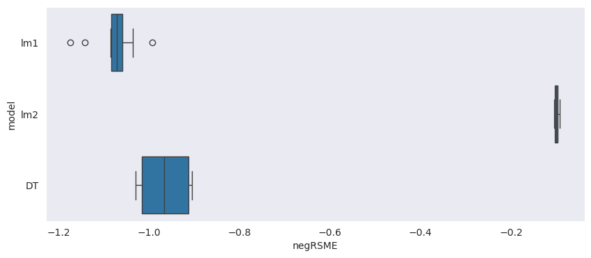
And the different test scores fo the models are:
test_scores = {ml:(modelDict[ml])['test_score'] for ml in modelDict.keys()}
test_scores{'lm1': np.float64(-1.1337972762713564),
'lm2': np.float64(-0.09766049353178927),
'DT': np.float64(-0.9884304074639139)}The validation scores confirm what could be anticipated from the residual plots and coefficient tables: the second linear model is a very good fit for this dataset and it is clearly superior to the other two models. This is also confirmed by the test scores, which again indicate a clear advantage of the second linear model. The first linear model is definitely too rigid to account for the non linear relations between these variables, while the tree model is harmed by its failure to detect the interaction and probable overfitting.